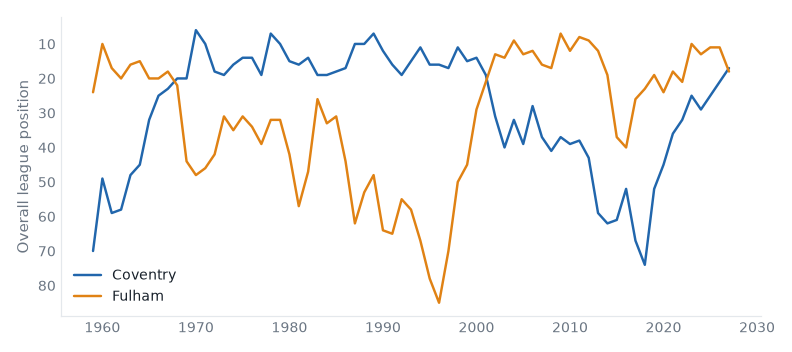
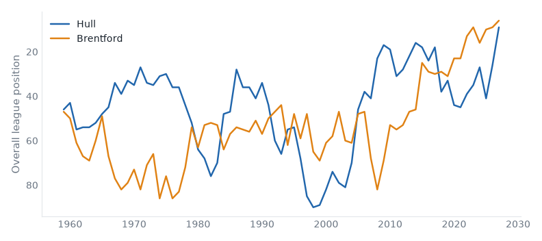
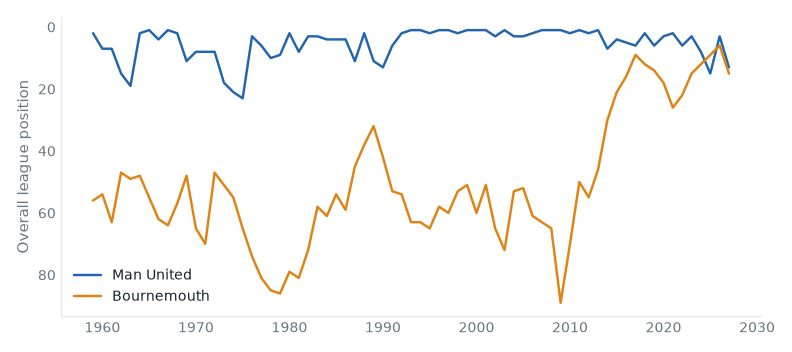
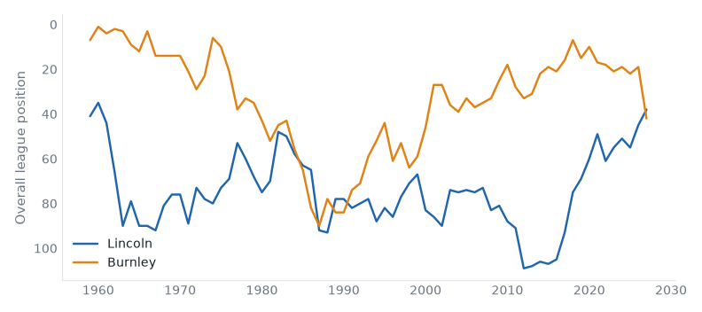
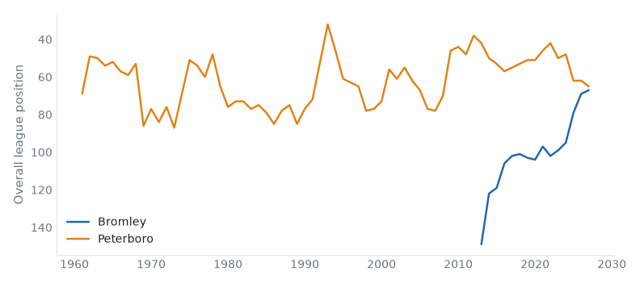
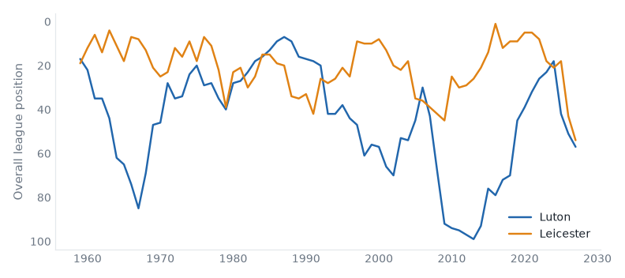

The Week Ahead
58 fixtures across 5 divisions, week of 23 October 2026.
Midweek
Premier League
Championship
League One
| Tue | AFC Wimbledon | 0–3 | Mansfield |
| Tue | Blackpool | 2–0 | Milton Keynes Dons |
| Tue | Bromley | 0–4 | Leicester |
| Tue | Burton | 0–0 | Bradford |
| Tue | Cambridge | 2–2 | Wycombe |
| Tue | Doncaster | 0–2 | Stockport |
| Tue | Huddersfield | 4–1 | Peterboro |
| Tue | Luton | 2–1 | Barnsley |
| Tue | Notts County | 2–0 | Sheffield Weds |
| Tue | Oxford | 2–1 | Wigan |
| Tue | Stevenage | 3–0 | Plymouth |
| Wed | Reading | 1–0 | Leyton Orient |
League Two
| Tue | Barnet | 1–3 | Swindon |
| Tue | Bristol Rvs | 1–2 | Salford |
| Tue | Cheltenham | 4–2 | Fleetwood Town |
| Tue | Chesterfield | 1–1 | Colchester |
| Tue | Crawley Town | 2–3 | Shrewsbury |
| Tue | Exeter | 2–0 | Crewe |
| Tue | Gillingham | 1–1 | Port Vale |
| Tue | Northampton | 0–1 | Tranmere |
| Tue | Rochdale | 2–2 | Grimsby |
| Tue | Rotherham | 2–2 | Newport County |
| Tue | Walsall | 3–0 | Oldham |
| Tue | York | 1–1 | Accrington |
Premier League
Coventry host Fulham in the Premier League on Saturday 24 October. Coventry City live between the Premier League and the Championship; they sit 17th with 6 points from 7 games, form LWWLL. Fulham live between the Premier League and the Championship; they are 5 seasons into a spell 1 division above that; they sit 18th with 5 points from 7 games, form WLDDL. They have met 4 times in league play since 1967/68: Coventry City 2 wins, Fulham 1, 1 drawn.

| Season | Division | Pos | Pts | |
|---|
| 2026/27 | Premier League | 17th | 6 | In progress |
| 2025/26 | Championship | 1st | 95 | Champions |
| 2024/25 | Championship | 5th | 69 | |
| 2023/24 | Championship | 9th | 64 | |
| 2022/23 | Championship | 5th | 70 | |
|
| Season | Division | Pos | Pts | |
|---|
| 2026/27 | Premier League | 18th | 5 | In progress |
| 2025/26 | Premier League | 11th | 52 | |
| 2024/25 | Premier League | 11th | 54 | |
| 2023/24 | Premier League | 13th | 47 | |
| 2022/23 | Premier League | 10th | 52 | |
|
Hull host Brentford in the Premier League on Sunday 25 October. Hull City live between the Championship and League One; this season is their highest since 2017; they sit 9th with 9 points from 7 games, form LDLDD. Brentford live between League One and League Two; they are 6 seasons into a spell 2 divisions above that; they sit 6th with 10 points from 7 games, form LDWDD. They have met 42 times in league play since 1958/59: Hull City 22 wins, Brentford 12, 8 drawn.

| Season | Division | Pos | Pts | |
|---|
| 2026/27 | Premier League | 9th | 9 | In progress |
| 2025/26 | Championship | 6th | 73 | Play-off Promoted |
| 2024/25 | Championship | 21st | 49 | |
| 2023/24 | Championship | 7th | 70 | |
| 2022/23 | Championship | 15th | 58 | |
|
| Season | Division | Pos | Pts | |
|---|
| 2026/27 | Premier League | 6th | 10 | In progress |
| 2025/26 | Premier League | 9th | 53 | |
| 2024/25 | Premier League | 10th | 56 | |
| 2023/24 | Premier League | 16th | 39 | |
| 2022/23 | Premier League | 9th | 59 | |
|
Man United host Bournemouth in the Premier League on Sunday 25 October. Manchester United belong in the Premier League — 99% of their 69 recorded seasons; they sit 13th with 7 points from 7 games, form DDDLD. Bournemouth live between League One and League Two; they are 5 seasons into a spell 2 divisions above that; they sit 15th with 6 points from 7 games, form WLLDD. They have met 18 times in league play since 2015/16: Manchester United 9 wins, Bournemouth 4, 5 drawn.

| Season | Division | Pos | Pts | |
|---|
| 2026/27 | Premier League | 13th | 7 | In progress |
| 2025/26 | Premier League | 3rd | 71 | |
| 2024/25 | Premier League | 15th | 42 | |
| 2023/24 | Premier League | 8th | 60 | |
| 2022/23 | Premier League | 3rd | 75 | |
|
| Season | Division | Pos | Pts | |
|---|
| 2026/27 | Premier League | 15th | 6 | In progress |
| 2025/26 | Premier League | 6th | 57 | |
| 2024/25 | Premier League | 9th | 56 | |
| 2023/24 | Premier League | 12th | 48 | |
| 2022/23 | Premier League | 15th | 39 | |
|
Ipswich v Nott'm Forest
Fri 23 Oct · above level compare
Ipswich Town 10th (LWLWL), Nottingham Forest 19th (LLLWD). At least one of them sits above where their record says they belong.
Crystal Palace v Newcastle
Sun 25 Oct · above level compare
Crystal Palace 14th (LWDLW), Newcastle United 11th (LLWLD). At least one of them sits above where their record says they belong.
Liverpool v Brighton
Sun 25 Oct · above level compare
Liverpool 5th (WLWDW), Brighton & Hove Albion 3rd (WWWWD). At least one of them sits above where their record says they belong.
| Sat 24 | Arsenal v Everton | champions last season | compare |
| Sat 24 | Aston Villa v Man City | | compare |
| Sat 24 | Chelsea v Tottenham | | compare |
| Sun 25 | Sunderland v Leeds | above level | compare |
Championship
Lincoln host Burnley in the Championship on Saturday 24 October. Lincoln City live between League One and League Two; this season is their highest since 1961; they sit 18th with 12 points from 11 games, form DLLLW. Burnley are, on the balance of their record, a Championship club; they sit 22nd with 8 points from 11 games, form LDWDL. They have met 18 times in league play since 1981/82: Lincoln City 7 wins, Burnley 6, 5 drawn.

| Season | Division | Pos | Pts | |
|---|
| 2026/27 | Championship | 18th | 12 | In progress |
| 2025/26 | League One | 1st | 103 | Champions |
| 2024/25 | League One | 11th | 61 | |
| 2023/24 | League One | 7th | 74 | |
| 2022/23 | League One | 11th | 62 | |
|
| Season | Division | Pos | Pts | |
|---|
| 2026/27 | Championship | 22nd | 8 | In progress |
| 2025/26 | Premier League | 19th | 22 | Relegated |
| 2024/25 | Championship | 2nd | 100 | Promoted |
| 2023/24 | Premier League | 19th | 24 | Relegated |
| 2022/23 | Championship | 1st | 101 | Champions |
|
West Ham v Southampton
Sat 24 Oct · below level compare
West Ham United 2nd (WWDDW), Southampton 4th (DWWLW). At least one of them sits below where their record says they belong.
| Fri 23 | Bolton v Middlesbrough | promoted last season | compare |
| Sat 24 | Blackburn v Wrexham | 2 above level | compare |
| Sat 24 | Cardiff v Birmingham | yo-yo club | compare |
| Sat 24 | Charlton v Norwich | yo-yo club | compare |
| Sat 24 | Portsmouth v Millwall | neighbours | compare |
| Sat 24 | Preston v West Brom | below level | compare |
| Sat 24 | QPR v Swansea | above level | compare |
| Sat 24 | Sheffield United v Derby | yo-yo club | compare |
| Sat 24 | Stoke v Bristol City | yo-yo club | compare |
| Sat 24 | Wolves v Watford | yo-yo club | compare |
League One
Bromley host Peterboro in League One on Saturday 24 October. Bromley belong in the National League — 60% of their 15 recorded seasons; this season is the highest in their record; they sit 23rd with 8 points from 10 games, form LLLWD. Peterborough United live between League One and League Two; they sit 21st with 9 points from 11 games, form LDWLL.

| Season | Division | Pos | Pts | |
|---|
| 2026/27 | League One | 23rd | 8 | In progress |
| 2025/26 | League Two | 1st | 87 | Champions |
| 2024/25 | League Two | 11th | 66 | |
| 2023/24 | National League | 3rd | 81 | Play-off Promoted |
| 2022/23 | National League | 7th | 71 | |
|
| Season | Division | Pos | Pts | |
|---|
| 2026/27 | League One | 21st | 9 | In progress |
| 2025/26 | League One | 18th | 53 | |
| 2024/25 | League One | 18th | 51 | |
| 2023/24 | League One | 4th | 84 | |
| 2022/23 | League One | 6th | 77 | |
|
Luton host Leicester in League One on Saturday 24 October. Luton Town are, on the balance of their record, a Championship club; they are 1 division below that now; they sit 13th with 14 points from 10 games, form WLWLL. Leicester City live between the Premier League and the Championship; they are 2 divisions below that now; they sit 10th with 15 points from 10 games, form WWLDW. They have met 32 times in league play since 1958/59: Luton Town 13 wins, Leicester City 9, 10 drawn.

| Season | Division | Pos | Pts | |
|---|
| 2026/27 | League One | 13th | 14 | In progress |
| 2025/26 | League One | 7th | 74 | |
| 2024/25 | Championship | 22nd | 49 | Relegated |
| 2023/24 | Premier League | 18th | 26 | Relegated |
| 2022/23 | Championship | 3rd | 80 | Play-off Promoted |
|
| Season | Division | Pos | Pts | |
|---|
| 2026/27 | League One | 10th | 15 | In progress |
| 2025/26 | Championship | 23rd | 46 | Relegated |
| 2024/25 | Premier League | 18th | 25 | Relegated |
| 2023/24 | Championship | 1st | 97 | Champions |
| 2022/23 | Premier League | 18th | 34 | Relegated |
|
AFC Wimbledon v Wycombe
Sat 24 Oct · above level compare
AFC Wimbledon 16th (LLLDD), Wycombe Wanderers 15th (DWLDW). At least one of them sits above where their record says they belong.
Cambridge v Plymouth
Sat 24 Oct · above level compare
Cambridge United 4th (DWWDD), Plymouth Argyle 5th (LLWWL). At least one of them sits above where their record says they belong.
Doncaster v Sheffield Weds
Sat 24 Oct · fallen giant compare
Doncaster Rovers 19th (LLWWL), Sheffield Wednesday 7th (LWDDD). Sheffield Wednesday have played in the top flight.
| Sat 24 | Blackpool v Mansfield | fallen giant | compare |
| Sat 24 | Burton v Leyton Orient | fallen giant | compare |
| Sat 24 | Huddersfield v Wigan | fallen giant | compare |
| Sat 24 | Notts County v Stockport | fallen giant | compare |
| Sat 24 | Oxford v Bradford | fallen giant | compare |
| Sat 24 | Reading v Barnsley | fallen giant | compare |
| Sat 24 | Stevenage v Milton Keynes Dons | above level | compare |
League Two
Bristol Rvs v Swindon
Sat 24 Oct · fallen giant compare
Bristol Rovers 16th (LLLLW), Swindon Town 15th (WDLLD). Swindon Town have played in the top flight.
| Sat 24 | Barnet v Oldham | fallen giant | compare |
| Sat 24 | Cheltenham v Newport County | | compare |
| Sat 24 | Chesterfield v Crewe | below level | compare |
| Sat 24 | Crawley Town v Tranmere | below level | compare |
| Sat 24 | Exeter v Fleetwood Town | below level | compare |
| Sat 24 | Gillingham v Grimsby | below level | compare |
| Sat 24 | Northampton v Colchester | fallen giant | compare |
| Sat 24 | Rochdale v Accrington | neighbours | compare |
| Sat 24 | Rotherham v Shrewsbury | below level | compare |
| Sat 24 | York v Port Vale | below level | compare |
| Mon 26 | Walsall v Salford | below level | compare |
National League
| Fri 23 | Gateshead v Tamworth | | compare |
| Sat 24 | Aldershot v Wealdstone | below level | compare |
| Sat 24 | Barrow v Forest Green | relegated last season | compare |
| Sat 24 | Boreham Wood v Fylde | above level | compare |
| Sat 24 | Eastleigh v Boston Utd | | compare |
| Sat 24 | Harrogate v Sutton | above level | compare |
| Sat 24 | Hartlepool v Hornchurch | below level | compare |
| Sat 24 | Kidderminster v Worthing | 2 above level | compare |
| Sat 24 | Scunthorpe v Woking | below level | compare |
| Sat 24 | Solihull v Carlisle | fallen giant | compare |
| Sat 24 | Southend v Halifax | 2 below level | compare |
| Sat 24 | Yeovil v Altrincham | neighbours | compare |
Reviewed on
Monday review, tiers 1–2 and Tuesday review, tiers 3–5.
Built from the English football database, tiers 1–5 from 1958/59.
Results from football-data.co.uk.
Archived copy.